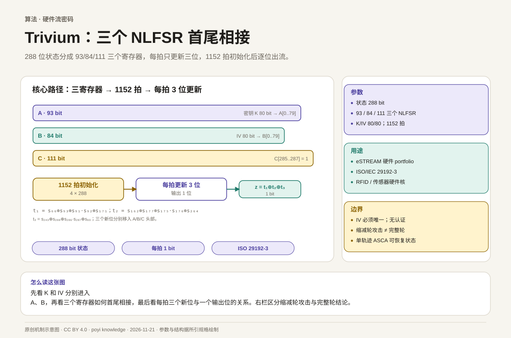
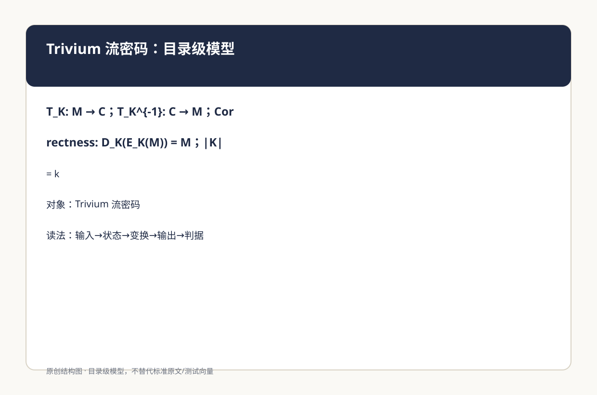

原理与机制
算法：Trivium 流密码（Trivium）。### 三个 NLFSR 组成的 288 位状态
Trivium 的状态是 288 位，分成三个非线性反馈移位寄存器 A、B、C，长度分别为 93、84、111。80 位密钥装入 A 的前 80 位，80 位 IV 装入 B 的前 80 位，C 的最后三位预置为 1，其余位补 0。### 每拍只更新三个位
t1 = s66 ⊕ s93 ⊕ s91·s92 ⊕ s171
t2 = s162 ⊕ s177 ⊕ s175·s176 ⊕ s264
t3 = s243 ⊕ s288 ⊕ s286·s287 ⊕ s69
三个新位分别移入 A、B、C 的头部，其余位右移；输出位 z = t1 ⊕ t2 ⊕ t3。三个寄存器首尾相接，使一个寄存器的输出成为另一个的输入。### 1152 拍初始化
装载后先跑 4×288 = 1152 拍，丢弃输出，让密钥与 IV 扩散到全部 288 位；之后才输出密钥流，单对密钥/IV 最多产生 2^64 位。

为什么重要
Trivium 的设计目标是极小的硬件面积：288 个触发器、少量与门和异或门，没有 S 盒、查找表或大块存储。它入选 eSTREAM 硬件 portfolio，并被 ISO/IEC 29192-3 收为轻量流密码标准，适合 RFID、传感器和门数极紧的嵌入式芯片。软件实现也能通过位切片或 64 路并行获得可观吞吐，但它的主战场是硬件。与 AES-CTR 相比，Trivium 在面积和功耗上更紧凑，代价是每拍只产生 1 位、需要较长的初始化。
应用与实例
Trivium 用于轻量物联网链路、RFID/传感器硬件加密核和资源受限设备的数据流加密；ISO/IEC 29192-3 给出了标准化的密钥流生成器定义。它只提供机密性，协议必须另加 MAC 或 AEAD 才能抵抗篡改。在软件侧，它常被用作密码分析基准：立方攻击、猜测确定攻击、代数侧信道分析都以 Trivium 为试验场，因为它的结构简单、轮数可裁、状态可完全建模。

边界与攻击面
Trivium 的安全性依赖完整的 1152 拍初始化。公开攻击大多针对缩减轮：例如 784/799 轮的立方攻击、缩减初始化的猜测确定攻击；完整 1152 轮没有公开的实用密钥恢复，但不能把“缩减轮分析”误读成“可以少跑初始化”。同步流密码的 IV 必须唯一；同一密钥/IV 重用会直接暴露明文异或。Trivium 没有内置认证，2^64 位密钥流上限也是硬边界。物理实现还要防侧信道：IET 2024 的代数侧信道分析表明，在 8/16/32 位微控制器上，单条功耗轨迹即可在很短时间内恢复完整 288 位状态；ASIC 在其实验模型下没有被打穿，但这不意味着硬件天然安全。掩码、双轨和功耗平衡仍是必需项。
历史与背景
De Cannière 与 Preneel 在 2005 年设计 Trivium，提交 eSTREAM 并进入硬件 portfolio；2008 年成为 eSTREAM 最终组合成员；2012 年 ISO/IEC 29192-3 把它与 Enocoro 一起标准化。此后它成为轻量流密码和立方攻击的标准研究对象。
技术参数与复算边界
该条目的形式模型是 (C=E_K(P;r),\qquad P=D_K(C))。输入：输入：Trivium 流密码的公开参数、密钥/随机数与消息；变量说明：P 明文，C 密文，K 密钥，r 随机化参数。 预期输出：按 Trivium 流密码 的规范执行后得到可验证的输出或可比较的优势界。 复算必须给出输入、步骤、输出和单位；示例只演示流程，不替代标准测试向量。
复杂度由密钥长度、分组/状态规模、轮数、随机数质量和敌手模型共同决定；参数越界、版本差异与实现侧信道都可能使公式结论失效。已登记限制：该条目只给出形式模型与可复算步骤，不声称已完成生产实现、侧信道认证或第三方安全评估。
参数与状态规模
公式 (C=E_K(P;r),\qquad P=D_K(C)) 的输入、输出和单位必须逐项登记；复算顺序为：1. 按算法规范编码输入 2. 在密钥控制下执行轮函数 3. 输出密文并检查长度与格式。
状态规模、密钥长度、分组长度和轮数决定复杂度；这些量不能从标题推断，必须以标准或实现文档为准。
逐步示例与核验
形式模型与复算步骤
[C=E_K(P;r),\qquad P=D_K(C)]
Trivium 流密码的公开参数、密钥/随机数与消息；变量说明：P 明文，C 密文，K 密钥，r 随机化参数。1.按算法规范编码输入。2.在密钥控制下执行轮函数。3.输出密文并检查长度与格式。边界：公式只覆盖已登记的参数与假设；参数取值、标准版本和实现细节仍以来源为准。
参考出处
- Wikipedia search entry for Trivium 流密码. https://zh.wikipedia.org/w/index.php?search=Trivium%20%E6%B5%81%E5%AF%86%E7%A0%81
- Handbook of Applied Cryptography (Menezes, van Oorschot, Vanstone). https://www.cacr.math.uwaterloo.ca/hac/